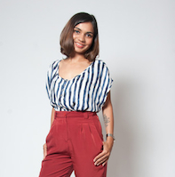

Hi!
Rakhi Parekh
Over the past ten years, I have engaged in visual story-telling, product design & brand strategy across web, fashion, advertising & retail industries. My expertise lies in both digital as well as wearable product design.I am passionate about emerging technologies and constantly think about optimum use cases for applying those. My design process is grounded in User-Centered design thinking. An entrepreneurial attitude keeps me motivated through the challenges and obstacles. I approach Interaction Design as a conversation between the user, design and technology. I am designer who loves to code.
Education
M.F.A Web & New Media Design
Academy of Art University, San Francisco
Experience
- 2014 -
Web Designer & DeveloperMylo Solutions, Inc.
- 2013 -
User Testing FacilitatorUsability Lab, Academy of Art University, San Francisco
- 2012 -
User Research InternInteractive Catwalk, Tutorpro.com
- 2012 -
Contributing Writer www.digitalstyledigest.com
- 2007-2012 -
Creative Director & Co-Founder Pop-Att, High-Street Fashion & Lifestyle brand, Mumbai, India
- 2001-2010 -
Creative Director & Founder Style Mind Soul, Styling Consulting Agency, Mumbai, India
- 1999-2001 -
Fashion Stylist at Elle Magazine, India
Skills
- DESIGN -
Adobe Design tools, Omnigraffle, Balsamiq
- RAPID PROTOTYPING -
HTML5, CSS3, jQuery, Javascript
- MOTION-
Adobe After Effects, Cinema4D